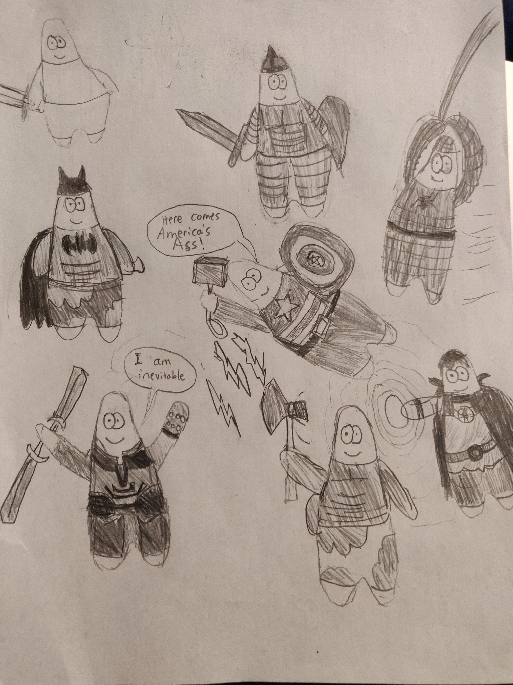
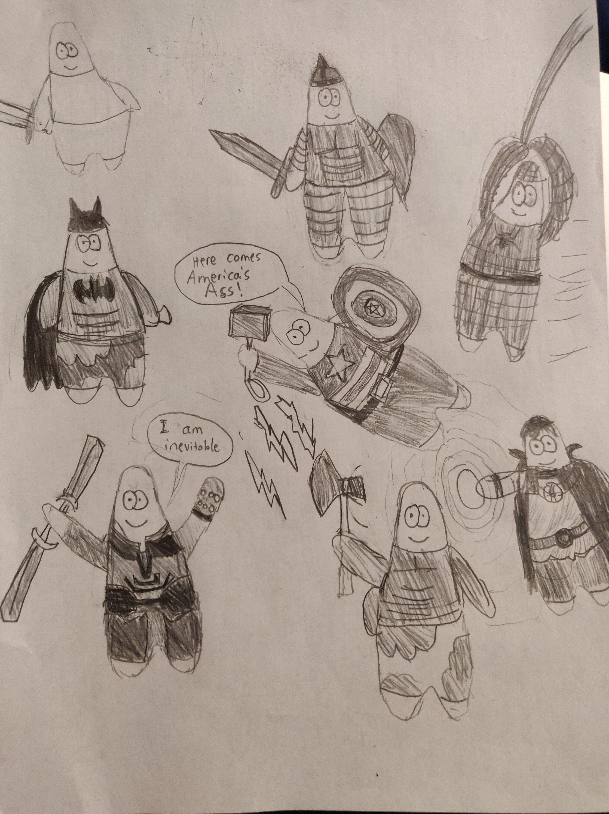

About Me
I am a sophomore at the University of Connecticut Honors College studying Electrical Engineering and Computer Engineering, minoring in mathematics. I graduated from the Advanced Math and Science Academy Charter School in 2018 and I am on track to graduate from UConn in May 2022.
I am very passionate about engineering, especially in the fields of robotics and artificial intelligence. I am interested in both the hardware and programming, as I believe both are critical to solving various real
life problems. Throughout the last few years I have made every effort to immerse myself in the field and learn as much as I could about the field through extra curricular activities and internships.
I am actively searching for internships and other work opportunities to learn and grow in the engineering field.
I am also interested in music and graphic design. I have been learning Carnatic (Indian Classical) Vocal music for a little over ten years, and this interest led me to develop my skills in running live audio for events. I also freelance as a graphic designer, creating logos, flyers, banners, etc.


 
